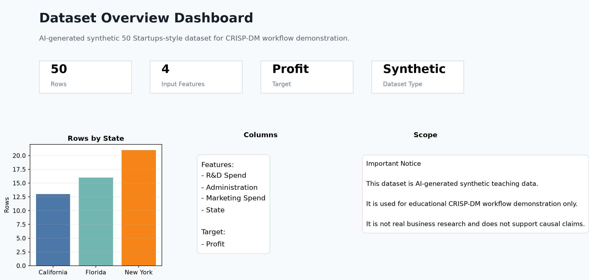
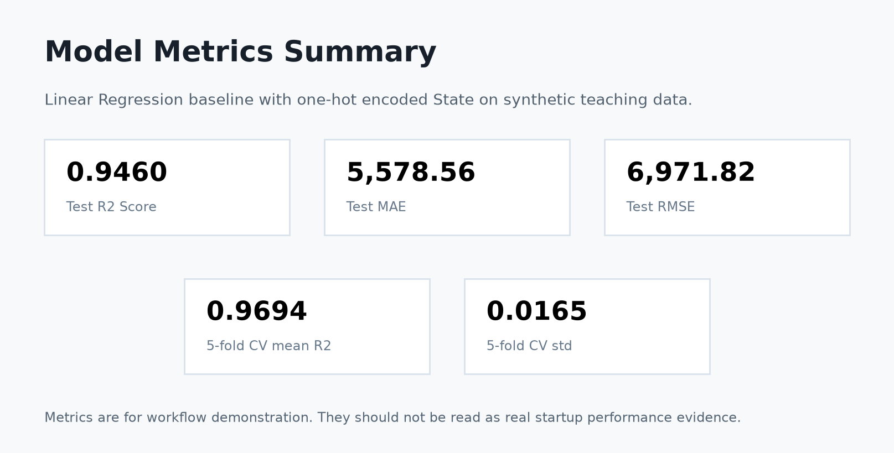
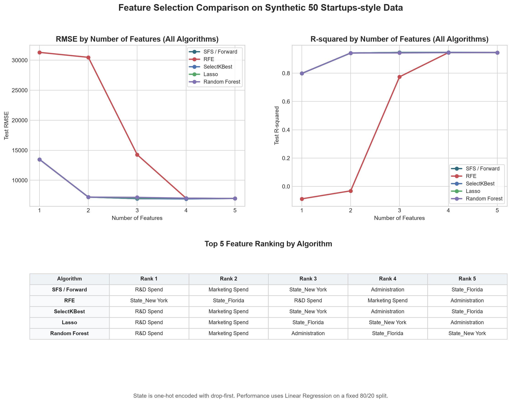

Business Understanding
Predict startup profit as a supervised regression teaching task.
GitHub Homework Showcase
CRISP-DM machine learning workflow with an interactive Feature Selection Comparison Dashboard for a synthetic 50 Startups-style dataset.
CRISP-DM
Predict startup profit as a supervised regression teaching task.
Inspect 50 synthetic records, missing values, columns, and summary statistics.
Use numeric spending fields and one-hot encode the nominal State feature.
Train a Linear Regression baseline inside a scikit-learn workflow.
Report R2, MAE, RMSE, and 5-fold cross-validation stability.
Save project artifacts, plots, documentation, and this static dashboard.
Dataset Overview
The dataset contains spending fields, a categorical state field, and a numeric profit target. It is intentionally generated for workflow demonstration and reproducibility.

Interactive Data Explorer
| State | Rows | Avg R&D Spend | Avg Marketing Spend | Avg Profit |
|---|
Model Metrics

Feature Selection Comparison

Insight Summary
R&D Spend and Marketing Spend usually appear near the top because the synthetic generation formula gives them strong predictive signal. State adds a smaller location-style adjustment, and Administration is comparatively weaker in this data.
The dashboard compares model behavior on a generated dataset. It does not claim real-world startup causality or business truth.